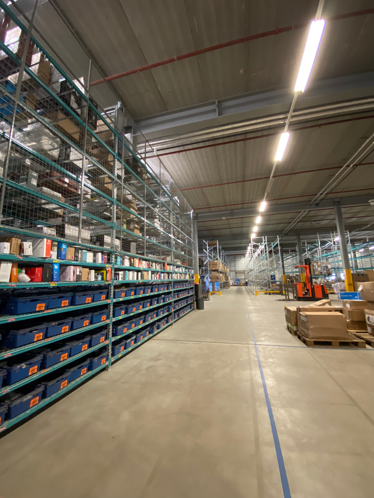

002 : Project
Samen met Sophie en Tobias hebben wij voor BuyBay uit Wijchen een project uitgevoerd. BuyBay is een bedrijf dat retailers, merken en fabrikanten helpt om de meeste waarde te halen uit hun retouren en overstock. Op deze manier kan er maximale winst geboekt worden, is er sprake van minder verspilling en een duurzamere wereld. Op het moment is BuyBay van mening dat zij nog te veel retouren ontvangen op de producten die zij uitgestuurd hebben, vandaar dat wij zijn ingeroepen en samen met hun de volgende onderzoeksvraag hebben opgesteld:
“Hoe kan BuyBay zijn gelimiteerde resources van Quality Assurance (QA) en Quality Control (QC) zo goed mogelijk inzetten om de kwaliteit van de aangeboden non-batch producten te waarborgen?”
Leerdoelen
- Ontwikkelt een prototype van de oplossings(richting) - Draagt vanuit verschillende rollen bij aan het succes van een projectteam (SP51) - Vertaalt een praktijkcasus naar een onderzoeksplan, voert deze uit en evalueert de kwaliteit van uitvoering (SB61) - Draagt actief bij aan een optimale werksfeer binnen en buiten zijn team (SP81) - Ontwikkelt een professioneel netwerk (SP82)
Opbouw
Op deze pagina zal er op het project voor BuyBay ingegaan worden, dit zal voornamelijk gaan over mijn eigen ervaringen en de gezette stappen door mij en mijn teamleden. Hierbij is het dus zo dat vooral dit gedeeld zal worden en wat algemene lijnen en er wat minder ingegaan zal worden op de details van gezamenlijke conclusies en documenten, wel is het mogelijk om hier links naar toe terug te vinden.
Verloop project
- 15 September: op deze dag werden er door de verschillende opdrachtgevers pitches verzorgd over de aangeboden projecten en waren er daarna verschillende vragenrondes. Mijn oog viel al gauw op 2/3 opdrachten waarnaar ik vervolgens heen ben geweest en extra vragen heb gesteld. Ik ervoer deze manier van projecten aanbieden als zeer prettig.
- 20 September: vervolgens zijn wij op deze dag de klas verder gaan verdelen over de verschillende projecten. Dit verliep allemaal erg soepel nadat iedereen zijn/haar voorkeur had doorgegeven in een gedeeld bestand.
- 22 September: nadat Sophie, Tobias en ik zeker wisten dat wij BuyBay als opdrachtgever toegewezen kregen, hebben wij besloten contact te zoeken met Linda van BuyBay. Zo hebben wij een eerste afspraak op locatie kunnen maken.
- 4 Oktober: op deze maandag was het dan zo ver, wij gingen met z'n drieën op bezoek bij BuyBay. Hier leerden wij kennis maken met Jeannette (QA & QC) en John (Operations). Zij zouden uiteindelijk onze echte begeleiders bij het bedrijf zijn. Hier hebben wij een aantal belangrijke vragen voor het projectplan en dus het project kunnen stellen. Vervolgens hebben wij met z'n alleen een ronde gemaakt door het gebouw en kunnen zien hoe alles in zijn werk ging. Het was erg leuk om bij een bedrijf als dit, dat ik helemaal niet kende maar toch dichtbij is, rond te mogen kijken.
- 14 Oktober: in de tussentijd zijn wij druk bezig geweest met het projectplan en stond op deze dag in de ochtend de voortgang van ons project centraal bij de pitstop bij het Kookcollege in Wijchen. Sophie en ik heb hier samen de projectvoortgang gepresenteerd a.d.h.v. een presentatie. Het was erg handig om tips en kritische vragen van anderen te krijgen en daarnaast ook de voortgang van anderen te zien.
- 15 Oktober: op dit moment waren we al een tijdje bezig met het vormen van het projectplan. Tijdens deze stappen kwamen we erachter dat we nog wat informatie miste. Vandaar dat wij ons concept doorstuurde naar Jeannette en John en besloten we om een meeting in de week erop te plannen en zo de missende informatie aan te vullen.
- 20 Oktober: de geplande meeting met John en Jeanette vond vandaag plaats. Tijdens deze meeting hebben we alle vooraf opgestelde vragen kunnen stellen. Zo hebben wij de laatste gatjes in het projectplan verder op kunnen vullen en veel meer nuttige achtegrondinformatie gekregen. Dit leidde er ook toe dat de focus wat veranderde en we erachter kwamen dat de achterliggende reden voor het project het hoge retourpercentage is.Daarnaast zijn er verdere afspraken gemaakt over de communicatie en zijn er verschillende ideeën uitgewisseld. In mijn beleving was deze meeting zeker benodigd om de volgende stappen op een goede manier te kunnen zetten.
- 22 Oktober: op deze dag hebben wij na de nodige uren deze week ons definitieve projectplan bij BuyBay en Pieter ingeleverd. Hier hebben wij geen aan- of opmerkingen meer op gehad.
- 1 November: vandaag zijn wij na het inleveren van het projectplan aan de slag gegaan met het vormen van de volgende stappen en contact zoeken met BuyBay. Wij waren namelijk van plan om met een aantal graders een dagje mee te lopen om zo een kijkje op de werkvloer te hebben en rond te kunnen vragen wat hun ervaringen zijn en waar zij mogelijk verbeteringen zien.
- 2 November: n.a.v. de groepsmeeting de dag ervoor ben ik vandaag aan de slag gegaan met fieldresearch en ben ik als 'klant' gaan bekijken hoe de websites met daarop de producten van BuyBay/Breezy werden ingedeeld zijn. Dit leverde een aantal zeer interessante verbeterpunten op. Ik vond het erg leuk om op deze manier met de materie bezig te zijn.
- 5 november: vandaag zijn wij door BuyBay (Nenand, team-leader) op locatie weer ontvangen en hebben wij een aantal uren met verschillende graders mee mogen lopen. Zo heb ik bij de categoriën function, reset en large mee mogen kijken. Dit gaf mij de mogelijkheid om te zien hoe het eraan toe gaat in de praktijk en vragen kunnen stellen aan de graders. Dit hielp enorm om meer een weerspiegeling van de werklijkheid te krijgen en verschillende verbeterpunten kunnen opmerken. In het begin was het een beetje onwennig maar uiteindelijk was het echt een super leuke ervaring om hier mee te mogen kijken. Bovendien kreeg ik nog een baantje op het kantoor aangeboden. 
- 8 November: vandaag stonden voor ons de creatieve sessie klaar, hierbij waren wij in totaal met 8 mensen en leverde dit een hoop nieuwe inzichten op. Het was erg fijn om deze inzichten vanuit andere hoeken op het project te krijgen, hier ga ik zeker naar kijken.
- 9 November: Sophie en ik zijn vandaag druk bezig geweest met het verwerken van alle nieuwe inzichten van gister. Bovendien hebben we een agenda opgesteld voor de meeting die wij samen met Witek morgen hebben.
- 10 November: Witek heeft vandaag voor Sophie en mij tijd vrij gemaakt voor een brainstorm-sessie. Op deze manier konden wij samen met Witek verder sparren over de nieuwe inzichten die wij al hadden gekregen, maar daarnaast kwam Witek vooral ook zelf met enorm veel goeie tips waar wij nog niet aan hadden gedacht of op een andere manier aan hadden gedacht. Zelf leek het ons bijvoorbeeld al handig om iets met AI te doen maar wisten we niet hoe daarmee te beginnen, hier heeft Witek ons goed mee kunnen helpen en de instapdrempel kunnen verlagen.